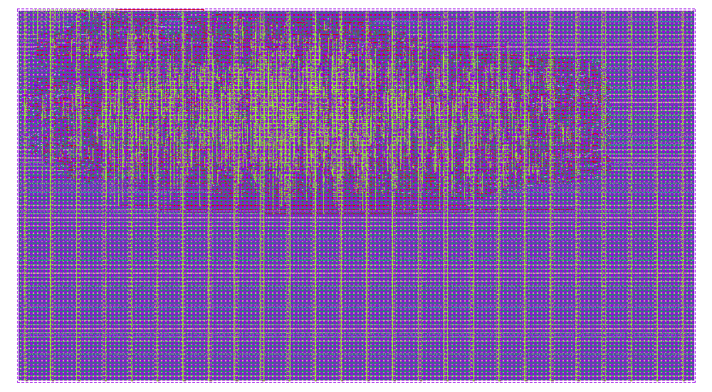

SYSTEMS ENGINEER
Matthew
Cranny
Test systems. Embedded hardware.
Reproducible verification.

PROTOCOL EMULATOR ASIC
Physical-design closure in progress
Programmable logic · Operating systems · Instrumentation
mcranny.net